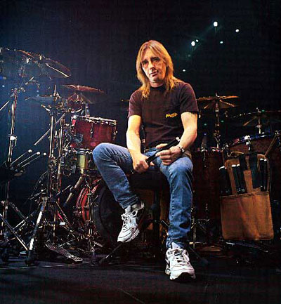

Phil Rudd
Phillip Hugh Norman Rudd (born Phillip Hugh Norman Witschke Rudzevecuis;[1] 19 May 1954) is an Australian drummer. He is best known for his membership of rock band AC/DC from 1975 until 1983, and again from 1994 to present. After the 1977 departure of bass guitarist Mark Evans, he became the only Australian-born member of the band. In 2003, he was inducted into the Rock and Roll Hall of Fame along with the other members of AC/DC.
Biography
Rudd played in several bands in Melbourne before joining Buster Brown with future Rose Tattoo vocalist, Angry Anderson. They went on to release one album, Something To Say, in 1975 but Rudd left in 1974 for a brief spell in the Coloured Balls with Lobby Lloyde. During 1975 he was told about AC/DC's rhythm section auditions by his former Coloured Balls bandmate Trevor Young. He asked ex-Buster Brown bassist Geordie Leach to accompany him, but Leach refused. Rudd tried out and was hired immediately.
He fitted in with the band very quickly and contributed his solid drumming style to great effect on the string of albums recorded from 1975 to 1983. The band relocated to the UK in 1976 and followed a heavy schedule of international touring and recording.
Fired from AC/DC
In 1980 vocalist Bon Scott died. The band regrouped with vocalist Brian Johnson and recorded their most successful album, Back in Black. Rudd took Scott's death badly, but continued with AC/DC until he left the band during the recording of the Flick of the Switch album in 1983. He had completed his contribution to this album, and although session drummer B.J. Wilson was drafted in to help complete the recording, Wilson's drum parts were eventually not used. Future Dio drummer, Simon Wright, replaced Rudd, and featured in the videos that accompanied the singles released from the album.
Rudd's sacking from the band was partly a result of his own problems with drugs and a conflict with the band's rhythm guitarist and founder, Malcolm Young, which eventually became physical. After being sacked from AC/DC, Rudd retired to Tauranga, New Zealand where he purchased a helicopter company.
His decision to settle in New Zealand may have been due to his high profile. AC/DC fans began to regularly drive through streets Rudd had formerly lived on and approach people in an attempt to locate him. On his period away from AC/DC, Rudd has said, "I raced cars, flew helicopters, became a farmer and planted some crops. I lived in New Zealand which was great; nice and quiet with nobody bothering me". Rudd also continued to play drums, "when I wanted to rather than when I had to" and built his own studio.[3]
Rejoining AC/DC
When AC/DC went touring in New Zealand in 1991 during the Razors Edge World Tour, they called Rudd to see if he would like to "jam" with them. Rudd decided to accept their offer and was eventually rehired.
Compared to the artists who served in his absence, his style of drumming is deemed the most compatible with the style of the other band members. For this reason, they were glad to welcome him back following Chris Slade's term as drummer. It should be noted that there was no ill feeling as a result of Slade's departure. The band praised Slade for his performance and technical ability, but maintained that a certain sound had been missing from AC/DC's music since the altercation in 1983. Since then he has been a part of 3 AC/DC albums, Ballbreaker, Stiff Upper Lip, and Black Ice which was the band's biggest hit on the charts since For Those About To Rock in 1981. Phil and the rest of the band are on their Black Ice tour which, at this stage, ends in June 2010 in Berlin, Germany.